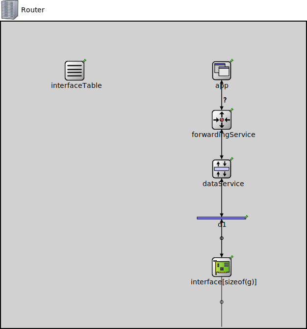

Package: inet.tutorials.protocol
Router
network(no description)
Inheritance diagram
The following diagram shows inheritance relationships for this type. Unresolved types are missing from the diagram.
Used in
| Name | Type | Description |
|---|---|---|
| Network91 | network | (no description) |
Extends
| Name | Type | Description |
|---|---|---|
| Node | compound module | (no description) |
Parameters
| Name | Type | Default value | Description |
|---|---|---|---|
| numInterfaces | int | 0 |
Properties
| Name | Value | Description |
|---|---|---|
| networkNode | ||
| isNetwork | ||
| display | i=device/router |
Gates
| Name | Direction | Size | Description |
|---|---|---|---|
| g [ ] | inout | numInterfaces |
Unassigned submodule parameters
| Name | Type | Default value | Description |
|---|---|---|---|
| interfaceTable.displayAddresses | bool | false |
whether to display IP addresses on links |
| forwardingService.d1.displayStringTextFormat | string | "processed %p pk (%l)" |
determines the text that is written on top of the submodule |
| forwardingService.d1.forwardServiceRegistration | bool | true | |
| forwardingService.d1.forwardProtocolRegistration | bool | true | |
| forwardingService.forwarding.address | string | "" | |
| forwardingService.sendWithHopLimit.hopLimit | int | ||
| dataService.fragmenter.displayStringTextFormat | string | "processed %p pk (%l)" |
determines the text that is written on top of the submodule |
| dataService.fragmenter.deleteSelf | bool | false | |
| dataService.fragmenter.headerPosition | string | "front" | |
| dataService.sequenceNumbering.displayStringTextFormat | string | "processed %p pk (%l)" |
determines the text that is written on top of the submodule |
| dataService.deaggregator.displayStringTextFormat | string | "processed %p pk (%l)" |
determines the text that is written on top of the submodule |
| dataService.deaggregator.deleteSelf | bool | false | |
| dataService.defragmenter.displayStringTextFormat | string | "processed %p pk (%l)" |
determines the text that is written on top of the submodule |
| dataService.defragmenter.deleteSelf | bool | false | |
| dataService.defragmenter.headerPosition | string | "front" | |
| dataService.reordering.displayStringTextFormat | string | "processed %p pk (%l)" |
determines the text that is written on top of the submodule |
| d1.displayStringTextFormat | string | "processed %p pk (%l)" |
determines the text that is written on top of the submodule |
| d1.forwardServiceRegistration | bool | true | |
| d1.forwardProtocolRegistration | bool | true | |
| interface.pcapRecorder.verbose | bool | true |
whether to log packets on the module output |
| interface.pcapRecorder.pcapFile | string | "" |
the PCAP file to be written |
| interface.pcapRecorder.fileFormat | string | "pcapng" | |
| interface.pcapRecorder.snaplen | int | 65535 |
maximum number of bytes to record per packet |
| interface.pcapRecorder.dumpBadFrames | bool | true |
enable dump of frames with hasBitError |
| interface.pcapRecorder.sendingSignalNames | string | "packetSentToLower" |
space-separated list of outbound packet signals to subscribe to |
| interface.pcapRecorder.receivingSignalNames | string | "packetReceivedFromLower" |
space-separated list of inbound packet signals to subscribe to |
| interface.pcapRecorder.dumpProtocols | string | "ethernetmac ppp ieee80211mac" |
space-separated list of protocol names as defined in the Protocol class |
| interface.pcapRecorder.packetFilter | object | "*" |
which packets are considered, matches all packets by default |
| interface.pcapRecorder.helpers | string | "" |
usable PcapRecorder::IHelper helpers for accept packettype and store/convert packet as specified linktype currently available: "inet::AckingMacToEthernetPcapRecorderHelper" |
| interface.pcapRecorder.alwaysFlush | bool | false |
flush the pcapFile after each write to ensure that all packets are captured in case of a crash |
| interface.pcapRecorder.displayStringTextFormat | string | "rec: %n pks" | |
| interface.sendToMacAddress.address | string | "" | |
| interface.resending.displayStringTextFormat | string | "processed %p pk (%l)" |
determines the text that is written on top of the submodule |
| interface.resending.numRetries | int | ||
| interface.sendWithAcknowledge.acknowledgeTimeout | double | ||
| interface.m1.displayStringTextFormat | string | "passed %p pk (%l)" |
determines the text that is written on top of the submodule |
| interface.m1.forwardServiceRegistration | bool | true | |
| interface.m1.forwardProtocolRegistration | bool | true | |
| interface.fcsInserter.displayStringTextFormat | string | "processed %p pk (%l)" |
determines the text that is written on top of the submodule |
| interface.fcsInserter.fcsMode | string | "declared" | |
| interface.fcsInserter.headerPosition | string | "back" | |
| interface.transmitter.displayStringTextFormat | string | "processed %p pk (%l)" |
determines the text that is written on top of the submodule |
| interface.transmitter.clockModule | string | "" |
relative path of a module that implements IClock(1,2); optional |
| interface.transmitter.datarate | double | ||
| interface.receiveAtMacAddress.address | string | ||
| interface.d1.displayStringTextFormat | string | "processed %p pk (%l)" |
determines the text that is written on top of the submodule |
| interface.d1.forwardServiceRegistration | bool | true | |
| interface.d1.forwardProtocolRegistration | bool | true | |
| interface.fcsChecker.displayStringTextFormat | string | "dropped %d/%p pk (%k/%l)" |
determines the text that is written on top of the submodule |
| interface.fcsChecker.backpressure | bool | false | |
| interface.fcsChecker.headerPosition | string | "back" |
Source code
network Router extends Node { parameters: @display("i=device/router"); }File: tutorials/protocol/Network91.ned
 This documentation is released under the Creative Commons license
This documentation is released under the Creative Commons license